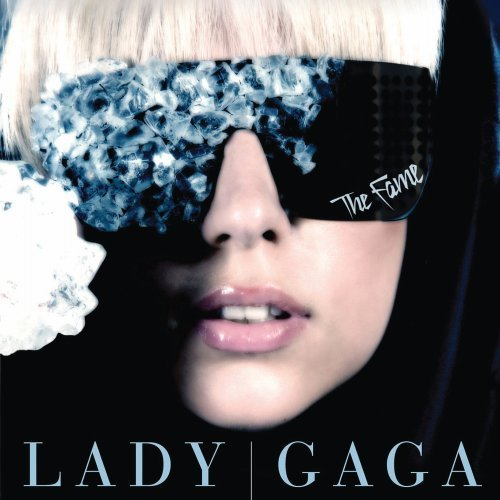
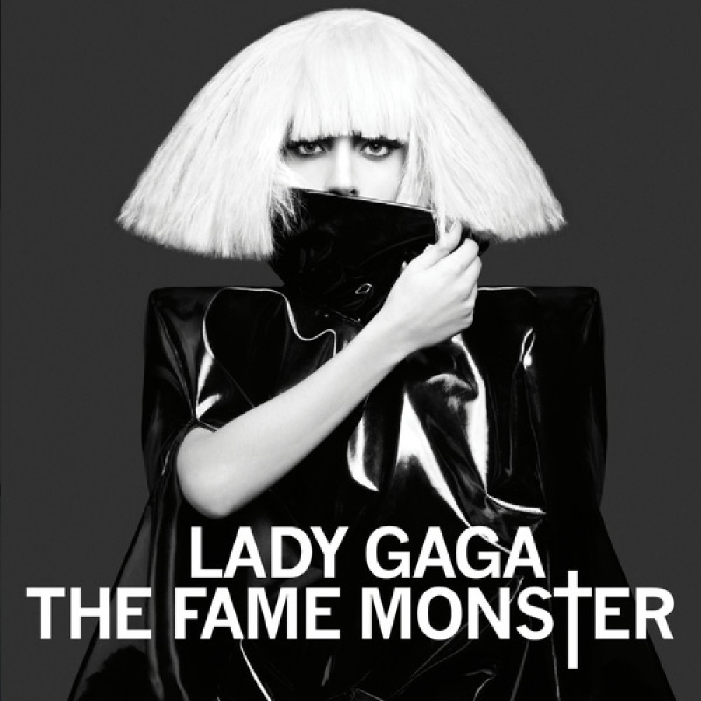
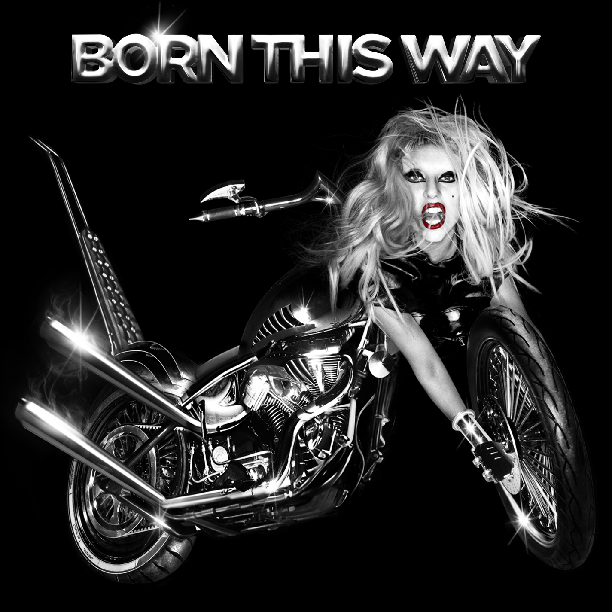
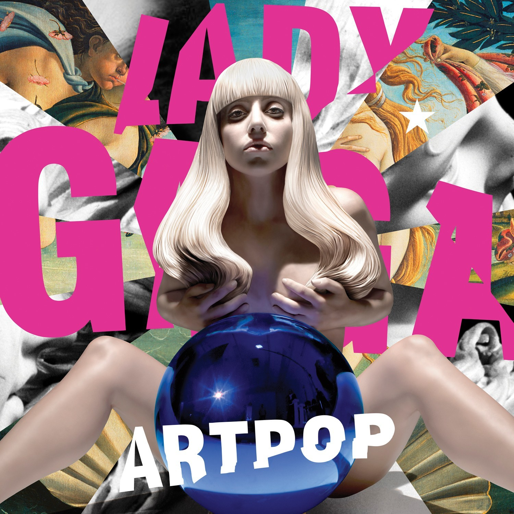
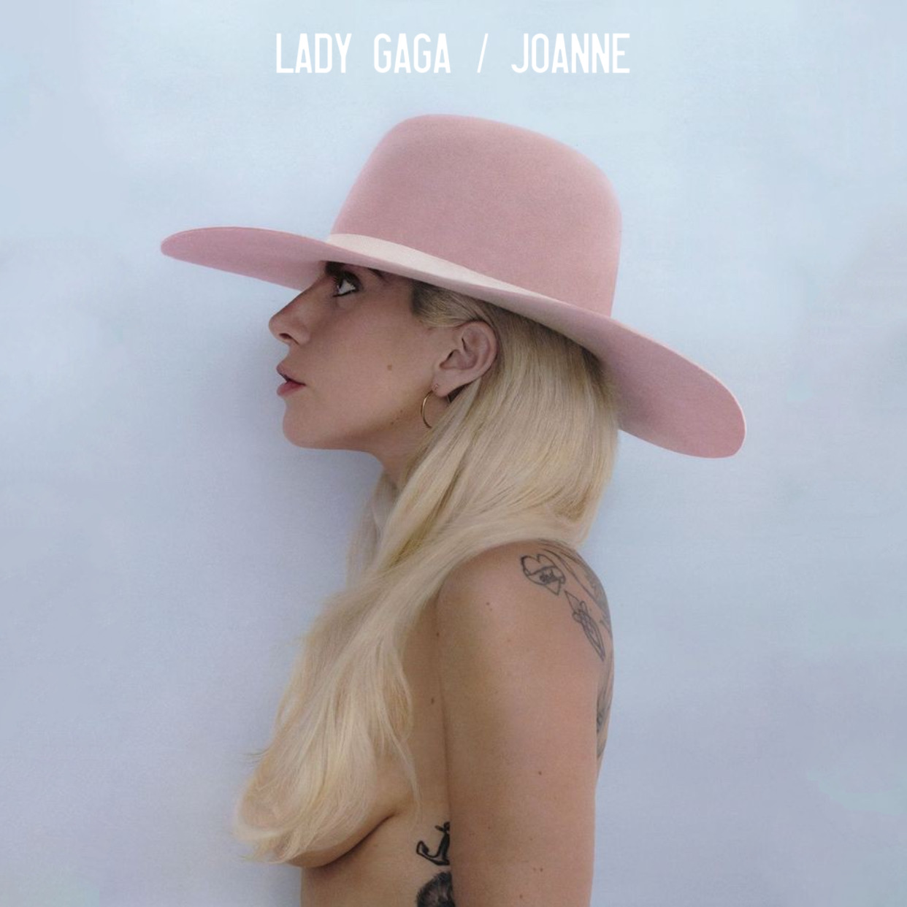
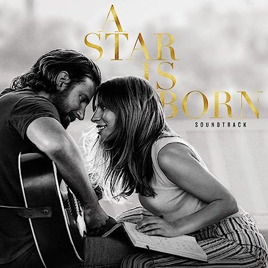

Introdução
Cantora, compositora, instrumentista, atriz e produtora musical norte-americana
Stefani Joanne Angelina Germanotta, mais conhecida como Lady Gaga, a diva pop começou a sua carreira de sucesso aos 19 anos e vem marcando gerações até hoje se atualizando e trazendo mais conteúdo de qualidade para a indústria musical.
Logo abaixo estão eles:
Álbuns

THE FAME
The Fame é o álbum de estreia da cantora Lady Gaga e foi lançado em 19 de agosto de 2008. As letras abordam o estilo de vida de uma celebridade, o amor pela fama e dinheiro em músicas dançantes inspiradas em electropop e synthpop
01.Just Dance, 02.Love Game, 03.Paparazzi, 04.Poker Face, 05.Eh, Eh (nothing Else I Can Say), 06.Beautiful, Dirty, Rich, 07.The Fame, 08.Money Honey, 09.Starstruck, 10.Boys, Boys, Boys, 11.Paper Gangsta, 12.Brown Eyes, 13.I Like It Rough, 14.Summer Boy,

THE FAME MONSTER
The Fame Monster é o segundo álbum (EP) da artista Lady Gaga. Lançado em 18 de novembro de 2009, é um disco pop com referências de outros gêneros musicais, como o disco, glam rock, música gótica e synthpop. As faixas abordam o lado mais obscuro da fama, amor, sexo e álcool.
01.Bad Romance,02.Alejandro03.Monster, 04.Speechless, 05.Dance In The Dark, 06.Telephone (feat. Beyoncé), 07.So Happy I Could Die, 08.Teeth

BORN THIS WAY
Born This Way é o terceiro álbum de estúdio de Lady Gaga e foi lançado em 23 de Maio de 2011. Suas canções englobam tópicos entre sexualidade, religião, liberdade e feminismo. A obra traz uma vasta sonoridade e diversidade de gêneros, incluindo heavy metal, ópera, dance, synthpop, electropop, disco e o rock'n roll.
01.Marry The Night, 02.Born This Way, 03.Government Hooker, 04.Judas, 05.Americano, 06.Hair, 07.Scheiße, 08.Bloody Mary, 09.Bad Kids, 10.Highway Unicorn (Road To Love), 11.Heavy Metal Lover, 12.Electric Chapel, 13.Yoü And I, 14.The Edge Of Glory

ARTPOP
ARTPOP é o quarto álbum da cantora, compositora e produtora musical Lady Gaga. Lançado em 6 de novembro de 2013, o disco foca em gêneros de EDM e synthpop, com influências do rock, dubstep, funk e outros. As faixas tratam sobre amor, drogas, sexo, feminismo, arte, fama, astrologia, mitologia grega e romana.
]01.Aura, 02.Venus, 03.G.U.Y, 04.Sexxx Dreams, 05.Jewels & Drugs (Feat. T.I., Too $hort & Twista), 06.MANiCURE, 07.Do What U Want (feat. R. Kelly), 08.ARTPOP, 09.Swine, 10.Donatella, 11.Fashion!, 12.Mary Jane Holland, 13.Dope, 14.Gypsy, 15.Applause
CHEEK TO CHEEK
Cheek to Cheek é um álbum colaborativo entre Lady Gaga e Tony Bennett. O disco de jazz, lançado em 19 de setembro de 2014, consiste em regravações de clássicos de compositores do gênero. O álbum surgiu pela vontade de ambos em apresentar o jazz para um público jovem.
01.Anything Goes, 02.Cheek To Cheek, 03.Don't Wait Too Long, 04.I Can't Give You Anything But Love, 05.Nature Boy, 06.Goody Goody, 07.Ev'ry Time We Say Goodbye, 08.Firefly, 09.I Won't Dance, 10.They All Laughed, 11.Lush Life, 12.Sophisticated Lady, 13.Let's Face the Music and Dance, 14.But Beautiful, 15.It Don't Mean a Thing (If It Ain't Got That Swing), 16.On a Clear Day (You Can See Forever) (International physical deluxe version bonu, 17.Bewitched, Bothered and Bewildered International physical deluxe version bonus), 18.The Lady Is a Tramp (International physical deluxe version bonus), 19.Bang Bang (My Baby Shot Me Down) (live from Jazz at Lincoln Center) (iTunes Bonu), 20.The Lady's In Love With You (Home Shopping Network Bonus)

JOANNE
Joanne é o quinto álbum de estúdio da cantora Lady Gaga. O lançamento ocorreu em 21 de outubro de 2016 trazendo uma musicalidade de dance pop e soft rock para enfatizar a potência vocal da artista. As faixas incluem temas familiares e emoções pessoais, como a morte de sua tia paterna, Joanne, nome da obra.
01.Diamond Heart, 02.A-YO, 03.Joanne, 04.John Wayne, 05.Dancin' In Circles, 06.Perfect Illusion, 07.Million Reasons, 08.Sinner's Prayer, 09.Come To Mama, 10.Hey Girl (Feat. Florence Welch), 11.Angel Down, 12.Grigio Girls, 13.Just Another Day

A STAR IS BORN
A Star Is Born é a trilha sonora, lançada 5 de outubro de 2018, para o filme de mesmo nome. Lady Gaga, além de interpretar a personagem principal ao lado de Bradley Cooper, trabalhou no processo de composição das músicas do álbum, que se intercalam entre o pop, rock e country.
01.Intro, 02.Black Eyes, 03.Somewhere Over the Rainbow (Dialogue), 04.Fabulous French (Dialogue), 05.La Vie en Rose, 06.I'll Wait for You (Dialogue), 07.Maybe It's Time, 08.Parking Lot (Dialogue), 09.Out of Time, 10.Alibi, 11.Trust Me (Dialogue), 12.Shallow, 13.First Stop, Arizona (Dialogue), 14.Music to My Eyes, 15.Diggin' My Grave, 16.I Love You (Dialogue), 17.Always Remember Us This Way, 18.Unbelievable (Dialogue), 19.How Do You Hear It? (Dialogue), 20.Look What I Found, 21.Memphis (Dialogue), 22.Heal Me, 23.I Don't Know What Love Is, 24.Vows (Dialogue), 25.Is That Alright?, 26.SNL (Dialogue), 27.Why Did You do That?, 28.Hair Body Face, 29.Scene 98 (Dialogue), 30.Before I Cry, 31.Too Far Gone, 32.Twelve Notes (Dialogue), 33.I'll Never Love Again (Film Ver.), 34.I'll Never Love Again

CHROMATICA
Chromatica é o sexto, e mais recente, álbum da artista Lady Gaga. Lançado em 29 de maio de 2020, com letras fortes e batidas dançantes, o disco aborda temas presentes da vida de Gaga, como saúde mental, cura, persistência e encorajamento. Sua sonoridade traz influências do house music, pop, synthpop, disco e deep house.
01.Chromatica I, 02.Alice, 03.Stupid Love, 04.Rain On Me (With Ariana Grande), 05.Free Woman, 06.Fun Tonight, 07.Chromatica II, 08.911, 09.Plastic Doll, 10.Sour Candy (with BLACKPINK), 11.Enigma, 12.Replay, 13.Chromatica III, 14.Sine From Above (with Elton John), 15.1000 Doves, 16.Babylon, 17.Love Me Right (Bonus), 18.1000 Doves (Piano Demo) (Bonus), 19.Stupid Love (Vitaclub Warehouse Mix) (Bonus), 20.Stupid Love (Ellis Remix) (Bonus)
Conclusão
Que a Lady Gaga é uma grande artista todos sabem.
E seu sucesso ultrapassa as barreiras da música e ela já lançou sua marca de cosméticos e já fez um filme sendo protagonista juntamente de Bradley Cooper e já foi confirmada a sua presença em "Coringa 2"
E este pequeno site é apenas uma homenagem de uma fã.
Então para maiores informações acesse:www.ladygaga.com
Feito por: Hiane C. Matos